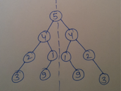

Java Interview Questions
[Capillary Technology, Bangalore]
First Round (Telephonic)
- Puzzle – A system has m number of arrows heading in East direction and n number of arrows heading in West direction. When two arrows collide, they change their direction with 180 degree. Find the total number of collisions before system is in stable state.
- Puzzle – Bits are coming into an array from an infinite bit stream such that first bit comes in the most significant bit of array and then so on. At any given point of time find if number is divisible by 3 or not. You are not allowed to convert the bit stream into decimal.
- Puzzle – There are total n islands. There are no bridges between any of them. Find:
- The minimum no of days for full connectivity. Ans. (n-1)
- The maximum no of days for full connectivity. Ans. n(n-1)/2
- Second upper bound when there are no choices left. Ans. 1+(n-1)(n-2)/2
- and max number of days in which total connectivity
- Find the center of a singly linked list.
- Binary tree with each node having value and a path to its parent. Given an array of such nodes. Find if it is a valid binary tree.
[Oracle, Hyderabad]
First Round (Telephonic)
- Default constructor in sub class and non default in super class. What happens when you make an object of sub class?
- Non default constructor in sub class and default in super class. What happens when you make an object of sub class?
- Is it possible to have a method with same name as constructor?
- How to call a constructor from another constructor in the same class?
- How to call base class constructor from one of its sub classes?
- Difference between constructor and a method.
- Collection framework.
- Difference between List and HashSet.
Second and Third Round (Face to Face)
- What is the underlying implementation of equals() method for Strings?
- How does retrieval work in HashMap?
- What happens when you put two key-value pairs in a HashMap and both of keys have:
- Same value from hashCode() method
- Same value from hashCode() method and are equal by equals() methods
- How many String objects are created in below statements? Explain the behavior.
String s1 = “A”;
String s2 = “A”;
s1 = “A” + “BCD”;
- Why are Strings immutable?
- A class has a static synchronized method and a non static synchronized method. What happens when two threads A and B access these methods respectively?
- Considering above scenario if non static method is not synchronized then what happens?
- What is the output of below program:
class A {
int i = 10;
void print() {
System.out.print(i);
}
}
class B extends A {
int i = 20;
void print() {
System.out.print(i);
}
}
class A {
public static void main(String[] args) {
A a = new B();
System.out.print(a.i);
a.print();
}
}
- Which all design patterns have you used?
- What is Singleton Design Pattern?
- What is Factory Design Pattern?
- How do you achieve serialization?
- What are nested classes?
- Which type of variables a nested class can access from the outer class?
- Which all access modifiers can you use with inner classes?
- A method has a local variable, say int i, how can you access it in an anonymous inner class which is defined in that method?
- Puzzle – There are 25 horses and 5 can run at a time in a race. Considering the fact that you only have ranks from each race, in how many iterations you will find the top 3 fastest horses?
[Navtec Nokia, Mumbai]
First Round (Telephonic)
- Difference between Vector and ArrayList.
- Difference between Set and List.
- How to synchronize a list?
- Threading.
- OOP fundamentals.
- What is an Interface?
- Is an Interface implementation an example of Inheritance?
- Is an Interface implementation an example of Polymorphism?
- Difference between String and String Buffer.
[Talentica Software, Pune]
First Round (Face to Face)
- What is HashCode?
- Contract to override equals method of class Object.
- 64 types of collections.
- Strong references and weak references.
- Application where strong and weak references are used.
- How to optimize an SQL query.
- How exception handling is done in your project?
- Static area and Heap area.
- Why static variables and static methods?
- What is the main use of static methods?
- Where do static objects reside?
- Why threads were introduced in Java?
- Swapping of Integer class objects by a swap method with temp variable.
- Access modifiers.
- Difference between abstract class and an interface.
- Difference between HashMap, TreeMap and LinkedHashMap.
- Data structures.
- Algorithm to find a sequence in an array of random integers which results into a given sum.
- Comparator in Java.
- Mutable and immutable objects in Java.
- Why String is immutable in Java.
[Tribal Fusion, Noida]
First Round (Telephonic)
- An array of size 99 which contains integers from 1 to 100. Find the missing one.
- An array of size 100 which contains integers from 1 to 100 where one is missing and one is duplicate integer. Find both.
- Middle of singly linked list.
- Two singly linked lists merge at one point to make a shape equivalent to Y. Find the merging point.
- Difference between abstract class and an interface.
- Why interface if abstract classes are there.
- Finally block Vs Finalize() method.
- Cloneable interface.
- How does HashMap work?
- How do you ensure that keys in a HashMap retrieve correct values?
- Are HashMaps synchronized?
- Difference between HashMap and HashTable.
- Multithreading.
- Difference between String and String Buffer.
- Puzzle – 3 boxes are wrongly labeled. One contains only apples, second contains only oranges and third contains both apples and oranges. Take out one fruit and correct the labels.
- Puzzle – Four persons take 1 min, 2 mins, 5 mins and 10 mins respectively to cross a river. Two persons have to go together in a boat and time taken will be according to the person who takes more time. One has to come back to bring the boat back after reaching other side of river. Find the minimum time taken to reach other side of river.
[Verizon, Hyderabad]
First Round (Telephonic)
- If class B extends class A then what below mentioned statement mean to you?
- A a1 = new A();
- A a2 = new B();
- B b1 = new A();
- B b2 = new B();
- Considering above scenario if class A has methods add() and subtract() and class B has methods add() and multiply() then what all methods are available to instances a and b as written below:
- A a = new B();
- B b = new B();
- Output of below program:
String s = null;
if (s==null) {
System.out.print(“s==null”);
}
if (s.equals(null)) {
System.out.print(“s.equals(null)”);
}
- How does retrieval from a HashMap work?
- How can you retrieve all keys and values from a HashMap?
- In continuation to above question: Method entrySet() of HashMap API returns what type of object?
- Write an SQL query to retrieve second maximum salary from employee table.
- What is the use of HAVING clause in SQL statements?
- Write a sample query for question #8.
[Oracle, Bangalore]
First Round (Telephonic)
- What is an abstract class?
- Difference between an abstract class and an interface?
- Describe two scenarios where an abstract class and an interface are used?
- Will below program work?
abstract class A {
void x();
void y();
}
- Will below program work?
class A {
abstract void x();
void y();
}
- Will below program work?
abstract class A {
abstract void x();
abstract void y();
void z() {
System.out.print(“class A”);
}
}
class B extends A {
void z() {
System.out.print(“class B”);
}
}
- What are demon threads?
- Consider below scenarios and tell the output of strings s1 and s2 wherever applicable:
--------------------
String s1 = “123”;
s1.concat(“456”);
--------------------
String s1 = “123”;
String s2 = s1.concat(“456”);
--------------------
String s1 = “123”;
String s2 = s1;
s1.concat(“456”);
--------------------
- Write the pseudo code to find anagrams from 2 input strings.
- Puzzle – There are 10 brick producing machines with an unlimited supply. One out of those machines is defective which produces lighter bricks as compared to others. You have a digital weighing machine and are allowed to use it only once. How will you find the defective machine?
- Puzzle – Complete the below equation by using operators plus, minus, multiply, divide or parenthesis:
3 1 3 6 = 8
- You have DoctorId, DoctorName, HospitalId and HospitalName. One doctor can work in many hospitals and a hospital can have many doctors. What would the ER diagram for it?
Second and Third Round (Video Conferencing)
- What is an abstract class?
- What is a singleton class?
- Write an algorithm to identify if a string has unique characters. Use appropriate data structure.
- Puzzle – There are 25 horses and 5 can run at a time in a race. Considering the fact that you only have ranks from each race, in how many iterations you will find the top 3 fastest horses?
- Puzzle – Two persons A & B pick coins one by one from a plate which has 50 coins. Coins can be picked in a number from 1 to 6 in each turn. Whoever picks last will lose. If A picks first then who will surely win?
- Write an algorithm such that if an element in an MxN matrix is 0, its entire row and column is set to 0.
- Write an algorithm to find the sum of contiguous sub array within a one-dimensional array of numbers (+ve and –ve) which has the largest sum.
- How will you maintain the history of every change in tables Employee and Department?
- Describe thread-safe when you use Collection API?
- What is trade-off in thread-safe?
[Microsoft, Hyderabad]
First Round (Face to Face)
- Write a program to remove duplicates from an array/StringBuilder and return the same object without using any extra objects. You are allowed to use 2 or 3 primitives.
- What is multiple inheritance?
- Why multiple inheritance was not implemented in Java?
- What is method overloading and in how many ways you can achieve it?
- Is this method overloading?
int met(int a, int b)
float met(int b, int a)
- Why return type is not included in method overloading?
- How will you implement above overloading scenario (shown in #5) as a Java language feature?
- If class B extends A then which method implementation will be called in below scenario?
A a = new B();
met(a);
void met(A a)
void met(B b)
- Considering above scenario if both A and B have a method x() then which method implementation will be called for a.x()?
[Google, Hyderabad]
First Round (Telephonic)
- You have a commom pool which stores the server ids for servers which are free. Write the implementation of below these 3 methods for this purpose:
addServerId(int serverId) – to add a server id to existing pool
removeServerId(int serverId) – to remove server id from existing pool
getServerId() – to get a random server id from existing pool
- Write an algorithm to add 2 arrays of integers assuming them as two numbers and return the sum in an array.
Example: Given arrays {1,2,3} and {1,7} and Result: {1,4,0}
Second Round (Onsite)
- How will you design an algorithm to suggest friends to a user on social networking site? How will you keep your data managed for millions of users?
- Write an algorithm to find the occurrences of word “SNAKE” in the given 2D array of characters.
S N B S N
B A K E A
B K B B K
S E B S E
Third Round (Onsite)
- Design a class which generates power set out of a given set of strings. Use hasNext() and next() methods for iterating over all subsets.
- How will you write JUnits for above class?
[Goldman Sachs, Bangalore]
First Round (Telephonic)
- Write a recursive method to return nth Fibonacci number.
- Do you see any potential issues with above method? If yes, how you can avoid that?
- Write an algorithm to print all the nodes of a binary search tree using in-order traversal.
- Write an algorithm to reverse a singly linked list.
- Write an algorithm to create a sorted array out of two given sorted arrays of integers.
- Design a database schema where you have an online shopping store where customer places an order for some items and order is shipped to multiple addresses.
Second Round (Telephonic)
- Do you know J2EE?
- What is a transaction?
- Why do you need a transaction?
- Threading
- What is synchronization?
- Difference between synchronizing a method and a block?
- Can an abstract class not have any abstract methods?
- Can an abstract class have constructor?
- Can an interface have constructor?
- Difference between static and final.
- Can a static variable be final at the same time?
- An array of integers containing integers from 1 to 500 but one is duplicated. Write an algorithm to replace it with an integer X.
[Amazon, Chennai]
First Round (Coding Round)
- Given an MxN array containing only 0s and 1s. For every zero given in array, set the elements of corresponding row and column zero. Space complexity should be less than MxN.
- Write an algorithm to check if left half is a mirror image of right half for a given binary tree. Mirror image should be considered based on both node value and node position.

- Write an algorithm to convert a given binary tree into doubly linked list (as shown in below figure). Conversion should happen in place. No extra space is allowed to create a node, but you can store the references of nodes. node.left should be treated as previous element and node.right should be treated as next element in doubly linked list.

Second Round (Face to Face)
- How will you design “Whisper Sync” feature for Kindle?
- How will you design railway reservation system?
- Write the method implementation to convert a float into a string.
- What is difference between process and thread?
- What do threads not share with process?
- Why were threads designed?
[Morgan Stanley, Mumbai]
7 Rounds (2 Telephonic + 5 Face to Face)
- Write an algorithm to remove alternate numbers from an array list.
- Write an algorithm to print all the nodes of a binary search tree in increasing order.
- Write an algorithm to find LCA (lowest common ancestor) in a binary tree. (Hint: use stack)
- Write a program to return the power set of an array of integers {1, 2, 3}.
- You need to read from a file and write into database. How will you make it fast? Use Java APIs purely. What will you do if reading is faster than writing? What data structure will you use to store read objects from file.
- You are reading an a/c no from an XML file. There are three threads T1, T2 & T3. T1 and T3 get the same a/c no to process. T2 gets different a/c no. Make sure T3 only gets access to execute method after T1 finishes. Ans:- Create the string object using new String(getStringFromXML()).intern() and get lock on string object as intern() forces the same string object to be used for one string literal value.
- Tell something about new lock APIs in Java.
- What is Reentrant Lock?
- Difference between Hashtable, ConcurrentHashMap and Synchronized map?
- How are the put and get methods implemented in ConcurrentHashMap?
- Implement a blocking queue. Take care of boundary conditions - when queue is full, enqueue should wait and when queue is empty, dequeue should wait.
- What all design patterns have you used apart from Singleton and Factory?
- What all collections have you used?
- Difference between ArrayList and LinkedList? How will you choose one over the other?
- Difference between HashMap and TreeMap?
- How does TreeMap sort the data?
- How does HashMap work?
- What is the time complexity of HashMap retrieval? What if hashCode() method always returns the same value for key object?
- How is Entry<K, V> class implemented in HashMap class? How do the generics play the role to accept any kind of object?
- Which data structure is used hold all the key-values pairs inside a specific bucket in HashMap?
- Consider the below Parent and Child classes:

Which version of methods are called in below scenario?
Parent p = new Child();
p.m1();
p.m2(“Sohan”);
p.m3();
short i, j;
p.m4(i, j);
- Difference between Method Overriding and Method Overloading?
- All the conditions for Method Overriding?
- What does a method signature include?
- Why inside a method, a local variable has to be final to acess it in an annonymous inner class.
- JDK version?
- JVM?
- How is Java platform independent?
- Write a query to show duplicate rows in a table.
- Two tables - Product and Order. Write a query to fetch product ids which are not in Order table.
- Write a query to fetch all cities from Employee table where more than one employee are living.
- What is the difference between WHERE and HAVING clause?
[Rovi Corporation, Mumbai]
3 Rounds (1 Written + 2 Face to Face + 1 US call)
- Where are interfaces and abstract classes useful?
- Difference between composition and aggregation.
- What is dependency injection? How is it useful?
- Write an algorithm (given two strings s1 and s2) to find whether s2 is a perfect rotation of s1 or not?
E.g. s1=”abcfdcabf” and s2=”fdcabffabc”
- Write an algorithm (given two strings s1 and s2) to find whether s1 is anagram of s2 or not?
- Can you represent a number N in form: N = AB + BA where N, A and B are integers greater than 1.
- There is a magic ball. It has ability to reproduce another magic ball with same properties but it reproduces the first magic ball after second year and then a new magic ball after every subsequent year. If you start from one magic ball then how many balls will be there after 6th year. Generalise it for n number of years.
- Implement an LRU cache.
- How LinkedHashMap is implemented internally?
[Sonu] - [Decimal Point, Mumbai]
- Up arrow notation by Donald Knuth (http://en.wikipedia.org/wiki/Knuth%27s_up-arrow_notation).